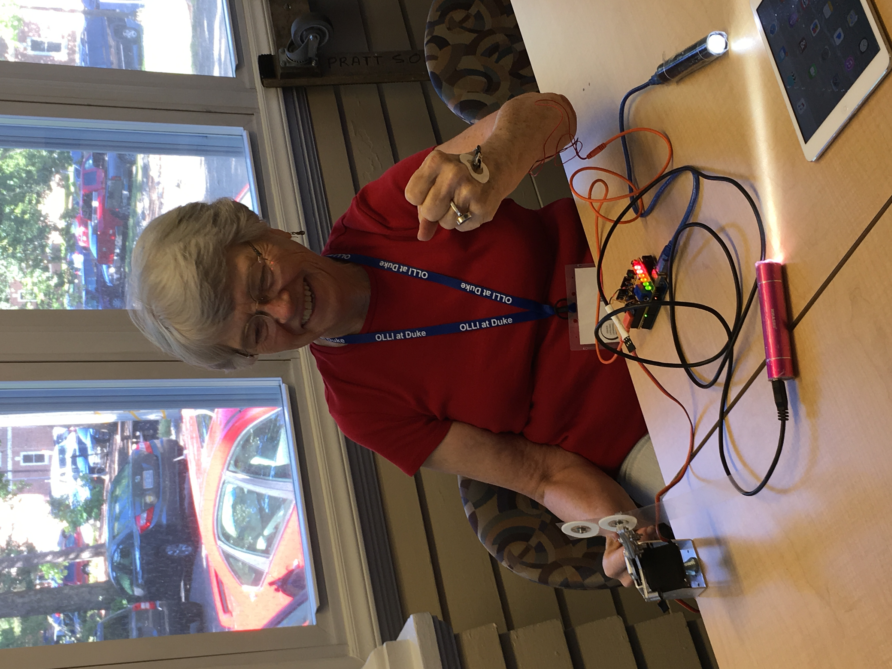
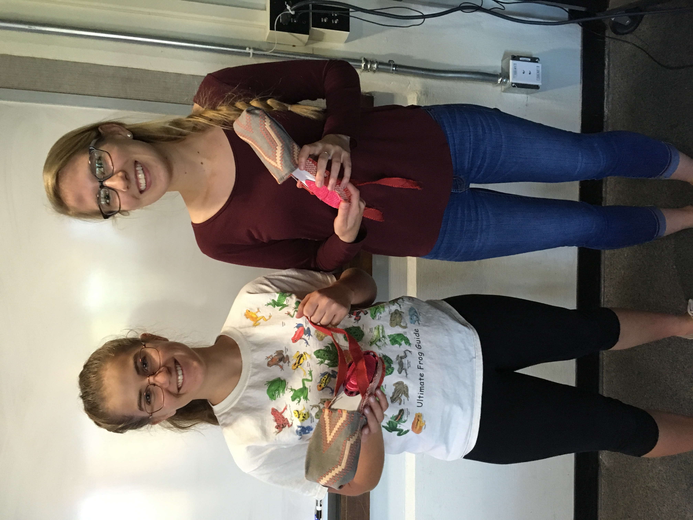
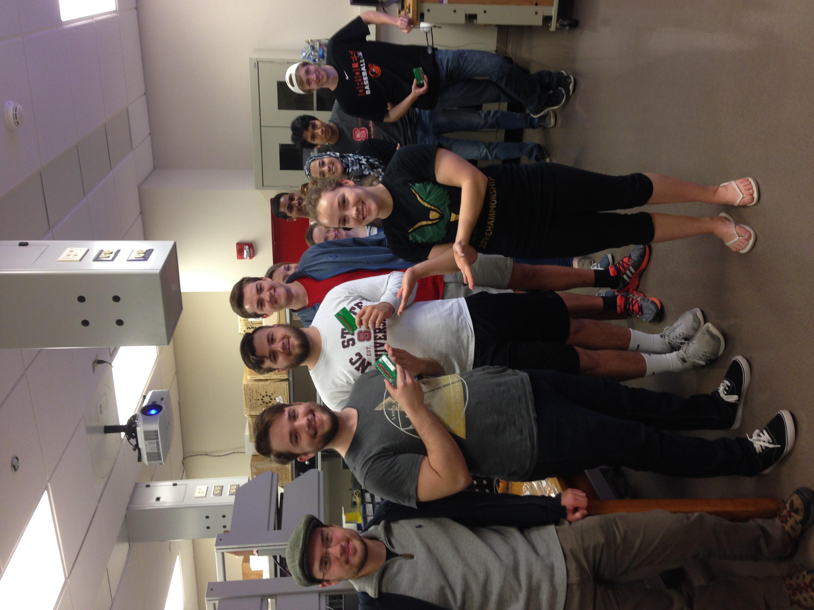

Teaching Statement
My Teaching Philosophy focuses on educating K-100, providing technology-driven, real-world
projects to students, and bringing STEM to women and minorities.
K-100 Education & STEM Engagement
It is extremely important to increase public engagement in STEM. My focus on “K-100
education” goes beyond educating at the university level. I have managed numerous K-12 events
at Marbles Children’s Museum, local high schools, and the Raleigh Natural Science Museum. I
love connecting with young students over exploration of the sciences.
I am an active participant in encouraging fellow women and minorities to consider a career in
STEM. My outreach with the Society of Women Engineers and Engineering Ambassadors has
emphasized this, working with middle school girls on science projects, designing science games
with the Girl Scouts, and teaching labs at low-income schools.
I have also had the opportunity to develop a course on Biomedical Engineering innovations for
the Osher Lifelong Learning Institute, a non-profit that provides education to senior citizens.
(See Syllabus Here) The course I developed was highly technical, but I wanted to open it to
everyone, regardless of background. As a result, I had a broad range of students, from former
elementary teachers to dentists. Our discussions were lively and filled with personal narratives
and the laboratory component was always the highlight of the class. I wrote about my experience here.
“Brinnae is the best teacher yet at Olli and I have take many of your courses! In addition, this
class was the best yet at Olli! Her knowledge of leading edge technology in many areas was
fascinating to hear.” (OLLI student)
Bringing Real-World Applications to the Classroom
Traditional engineering courses often focus most of their attention on getting through complex
content rather than relating the complex content to its applications in industry, research, or
education. I want to turn this model upside down and start by discussing the application, directly
relating content to the reasons we are learning it. I have implemented this model throughout the
courses I have been a lab instructor for (See Developed Course Material Here) and in courses I have guest lectured for (See Case Study Here). I have had
positive student feedback from this model.
“You emphasized why doing each lab was important for BME which made me want to invest
time in learning the applications [of] whatever I was using” (BME 204 student)
“You always had examples, many of them from personal experience, of applications of each
technology in current biomedical research” (BME 204 student)
“You are great at concisely explaining the topics and applications that make these labs
important” (BME 204 student)
Emphasis on Technology
I emphasize the use of technology in my classrooms and labs. Using cell phones, tablets, and
laptops through classroom activities focused on active learning is a common theme in my
classroom. Students need to be able to interact with various forms of technology and introducing
new ways to design, build, and think using a variety of programs and methods, so it is essential
to make these connections early in their study.
Technology also plays an important role in the way I teach my courses. I utilize online platforms to disseminate knowledge. For example, R is a statistical programming language not
commonly taught to engineers. Engineers would benefit from having knowledge of this powerful statistical software, so I developed an online course, "R for Engineers".
I also host my own blog with easy to understand guides and tutorials for understanding technical topics in data science, machine learning, and engineering. A few of my favorites are
here and here.
STEM for Everyone
It is incredibly important to increase uptake of Science, Technology, Engineering, and Mathematics (STEM) in women and minorities. As lead developer of the Digital Biomarker Discovery Pipeline (DBDP),
an open-source software platform for developing digital biomarkers from mHealth and wearables data, I know how few women and minorities are represented in tech, open source, and data science. To increase uptake of STEM, I co-founded
dbdpED, an educational platform for digital biomarker discovery using mobile health and wearables data. With tutorials, case studies, and educational videos, dbdpED provides a resource for
learning the steps to using mHealth and wearables data to discover digital biomarkers. Here is an example of an easily accessible tutorial I developed for dbdpED.

A student in the Osher Lifelong Learning Institute uses signals from her muscles (EMG) to operate a robot hand.

Students in an engineering course I substitute taught for show off the shoes they designed and engineered.

BME 204 students show off pulse oximetry kits they built for Engineering World Health, one of the "real-world" application labs I added to the curriculum.